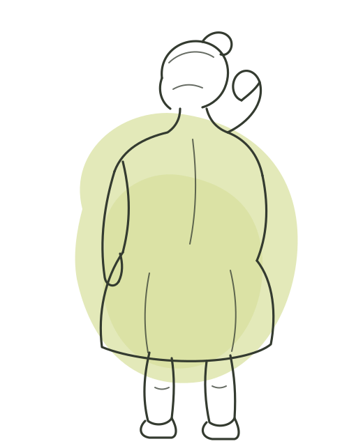

Intestino inflamado, disbiose ou problemas digestivos prejudicam a absorção. O que você toma não vira o que o seu corpo usa.

Boa parte do peso que não responde tem explicação nesses exames.
Em 2006 eram 12,1%. Um número não dobra em 18 anos por preguiça coletiva.
Se você quer investigar antes de tentar de novo, o primeiro passo é a consulta.